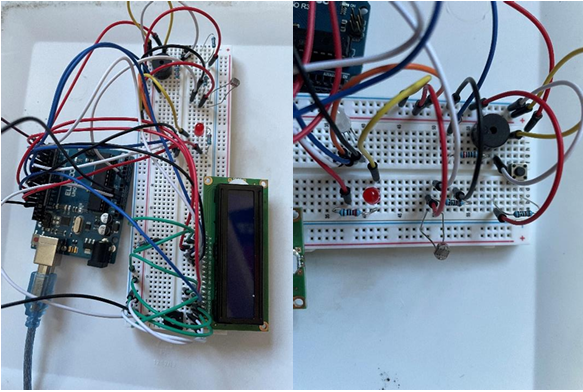
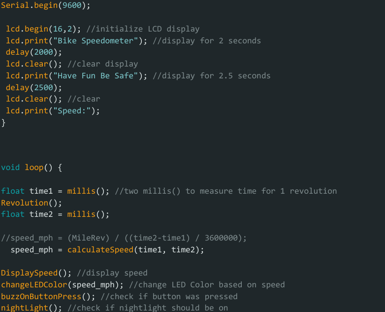

Logan Waldron
Arduino-Based Bike Speedometer
Video Demo: Watch here
For a personal project, I built a bike speedometer using an Arduino Uno and a magnetic hall effect sensor. The sensor detects wheel rotations, allowing me to calculate real-time speed and distance traveled based on tire circumference. I programmed the Arduino to display data on an LCD screen that was to be mounted on the handlebars.
The system was powered by a portable USB battery and enclosed in a weather-resistant 3D-printed case. I wrote custom code to filter sensor noise and update the display at a readable refresh rate. The final setup is accurate within ±1 mph and responsive to changes in speed.

This project allowed me to practice embedded system design, sensor integration, and signal filtering. A short demonstration video is included.
Top Skills Utilized: Embedded Systems, Sensor Integration, Data Acquisition, Circuit Design, Arduino Programming